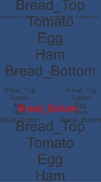
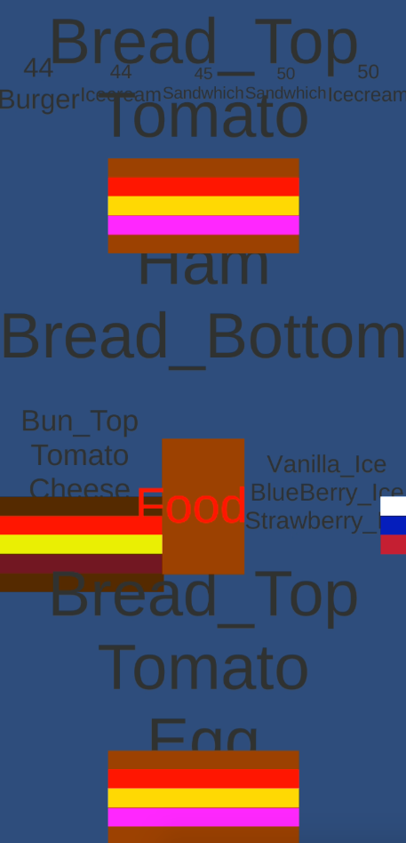
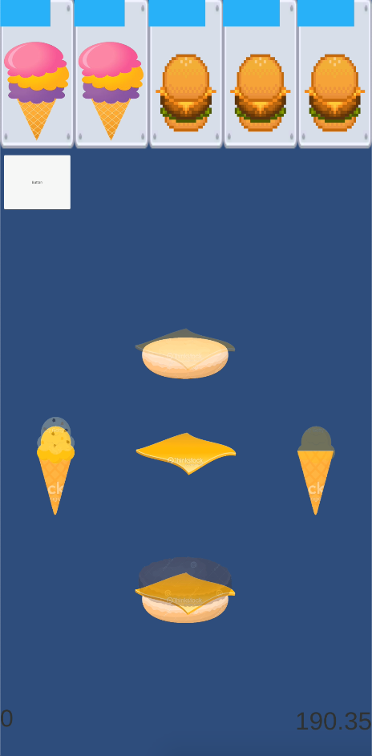
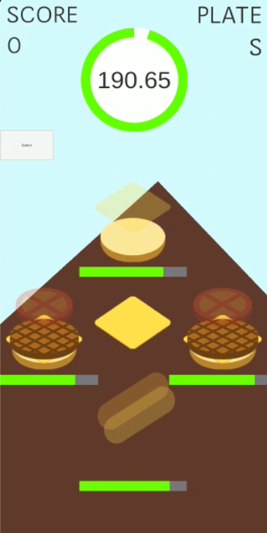
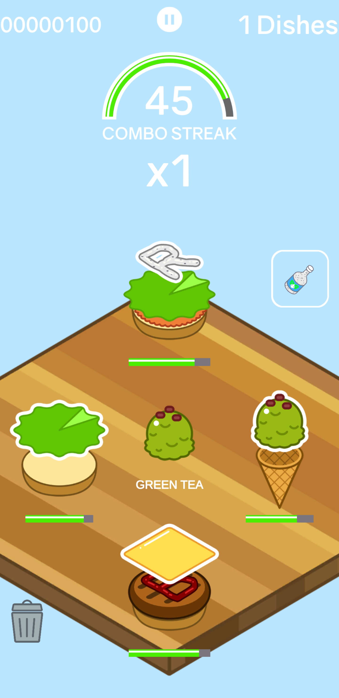

Origins
It was the year 2018 and I have just started and published my first mobile game Birdy Hop. Nothing too special, but an amazing milestone to be able to complete and ship a project.
For my next step, I wanted to create something a bit larger with a scope of around 6 months. I initially wanted to create a sort of speed math game where kids can practice their mental math, however I quickly realized that even I wouldn't want to play a game like that. I wanted something I'm more passionate about, something that many people can relate to.
How about Food?
This is when I came up with Food Swipe, with inspiration taken from Overcooked and a bit of diner dash, I was able to create a quick mobile prototype of my game for my artist/designer to check out and get some feedback.
First Iteration

This is the first prototype I created as a proof of concept. No timers, no images, no scores, just pure gameplay.
I showed my designer, Keane Mar, how it would potentially look like purely using text which with the ingredient in the middle, and the stack of ingrdients that makes up the whole receipe on the sides.
There is also a list of upcoming receipts to complete at the top of the screen.
Second Iteration

This is the second prototype to see how the gameplay would feel and potentially look. The ingredients are color coded, you swipe the colored ingreidents to the correct colored stack.
There is also a countdown timer for recipes that needs to be completed at the top of the screen.
Third Iteration

To paint a more detailed picture of what I envisioned for Keane, I borrowed some images online and created a simple mockup as to how the game would potentially look like.
After some discussion, we decided to remove the timers at the top of the screen since it does not add to the gameplay at all.
Taking inspiration from Overcooked, I wanted to have a similiar UX design by placing a list of food at the top. However, unlike Overcooked, There are only 4 incomplete stacks of food in play, which you cannot swap out for another stack.
For example, I would not be able to swap the 4th stack with the 5th stack on the list just because it was running out of time.
Therefore the list of foods at the top became redundant.
Fourth Iteration

For the first iteration of designs, Keane created concept art and a few base ingredients such as buns, patties, cheese...etc.
It allowed me to play around with gameplay and animation and get proper feedback as to how everything would mechanically look and feel.
Final Iteration

This is the final version of FoodSwipe that I have decided upon.
The art style has changed to be bit more cartoony and light. The game now includes a simplistic combo and score system.
But the biggest change of all, the trash and 'next ingredient' mechanic, giving the user more control and information.
The 'next ingredient' mechanic allows the user to plan ahead and swipe faster since they will be ready to react when the ingredient reaches the center.
The trash ingredient mechanic has two usages. Firstly, because of the 'next ingredient' mechanic, the game flow sometimes allowed redundant ingredients to be lined up.
For the second usage, it gives players the feeling of control. If a player wants to complete a burger which time is running out, they could trash everything until the desired ingredients come up.
Retrospective
The Good
- I was able to actually publish this application after a year of work on and off.
- The amount I learnt about animation. I have been so used to just doing the logic side of an application, I never really think about how animation affects the gameplay or logic.
- The architecture of how I structured the game loop was very OOP focused allowing easy and effortless expansions to new game mechanics and features.
Improvements Needed
- I should have learnt to use the standard C# coding format from the get go. I learnt about stylecop (source code style and consistency tool) 8 months into the project. However by then, there were too many violations that it just wasn't worth refactoring all my code to fit the rules.
- I was talking to an employee from a Vancouver based game company, and they told me about how one of their games is purely based in the canvas layer; so I did the same thing and placed all assets and gameobjects on the canvas layer. Little did I know, this has caused memory issues in the long run for this company's project, and some sprite issues for me.
- I had scoped this game to be completed in around 4 to 6 months, but I kept scope creeping (which I didn't expect myself to do). To create an elaborate unlock, story system with different themes of food and places. This led to publishing 6 months later than expected with only the core gameplay because of burn out. In the future, I would probably plan and scale games to be completed within 3 months.